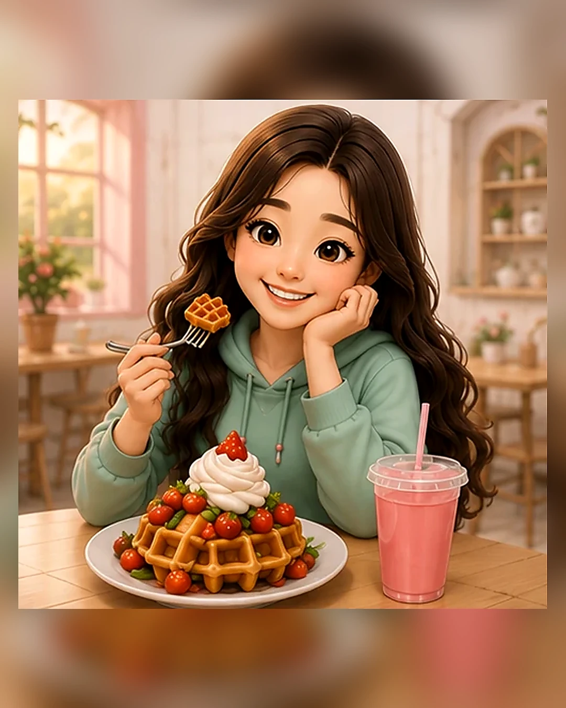
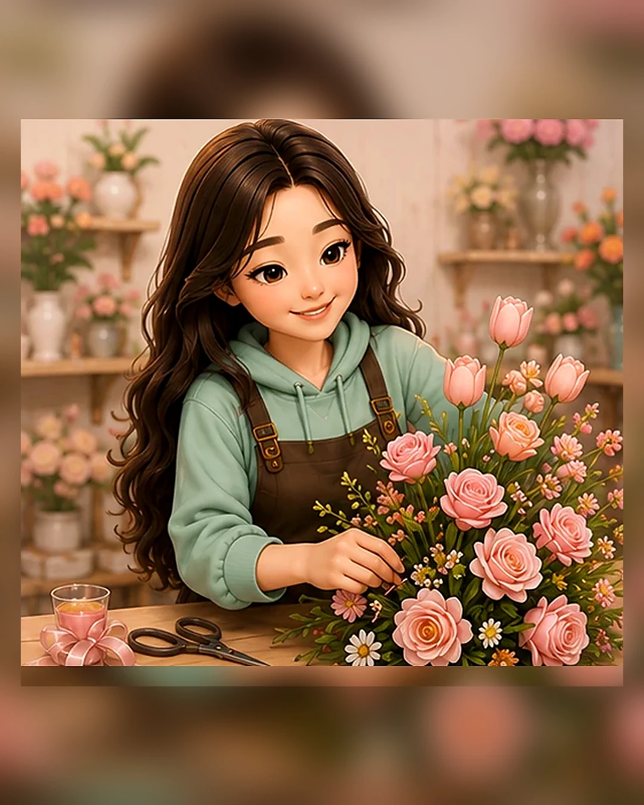
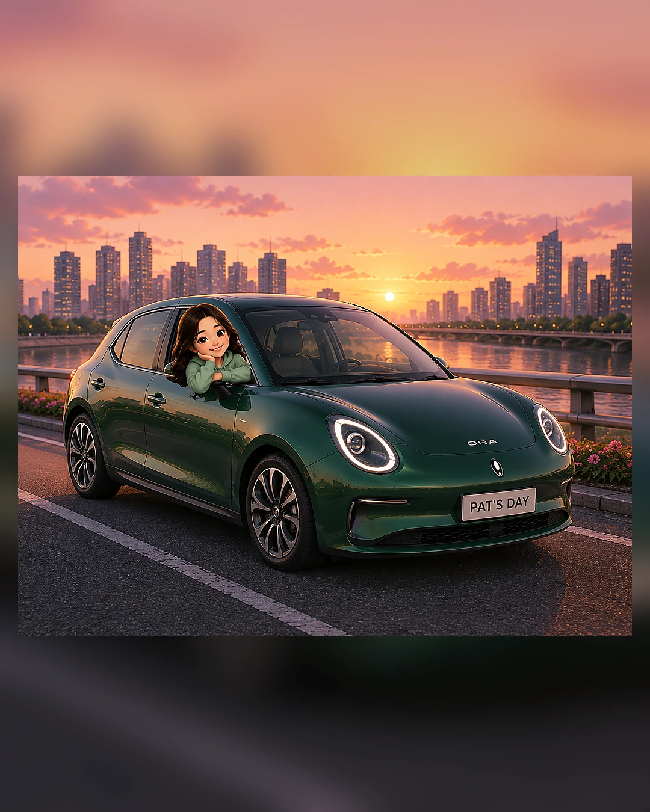

Pat's
Day
Day
Birthday adventure for Pat 💗
A tiny adventure made just for Pat
♡♡♡♡♡
2 / 5
เติมพลังก่อนเริ่มต้น
Pat's Day 🍓
Pat's Day 🍓
เติมพลังด้วยขนมที่ร้าน Good haus

♡♡♡♡♡
3 / 5
ร้านโปรดในดวงใจ
🥩💗
🥩💗
ปิดวันด้วยมื้อโปรด
♡♡♡♡♡
4 / 5
เริ่มต้นทำ Work shop
สุดโปรด 🌷
สุดโปรด 🌷

♡♡♡♡♡
5 / 5
จบวันอย่างสวยงาม 🌙💗
ขอบคุณที่ออกผจญภัยด้วยกันนะ
ขอให้วันเกิดของ Pat น่ารักที่สุดเลย ✨
ขอให้วันเกิดของ Pat น่ารักที่สุดเลย ✨
